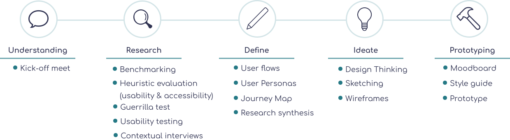
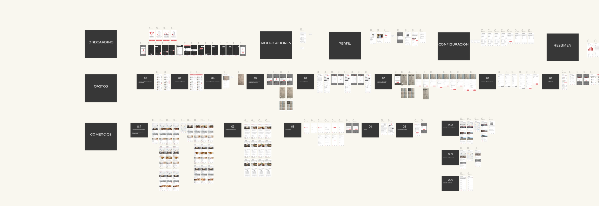

What did I learn over the 9-month project?
Index
Index card
Client
Voxel Group
Date
From November 2019 to June 2020
Device
Android mobile
Challenge
Evaluation of the mobile aplication to manage enterprise expenses and VAT return in terms of usability, accessibility, Human-Centered Design (HCD) and Material Design.
Practices
UX Research, UX & UI Dessign, Scrum UX
Tools
Figma, Trello, Slacks, Miro, Mural, FlowMapp
Methods
Benchmarking, Usability Testing, Wireframing, Prototyping, Sketching, Microinteracciones, Design Thinking, Journey Maps, User Interviews, Usability & Accessibility Analysis, Web Analytic
Teammates
Visual Designer + UX Designer + Interaction Designer
Project context
What's DevoluIVA?
DevoluIVA offers an enterprise service which consists of a network of existing establishments where employees and freelancers usually make small expenses, like restaurants, taxis and gas stations. Users can recuperate the VAT automatically by photographing their receipt, which generates an invoice. Receipts of businesses that are not part of the network can still be photographed and managed in the app, but will not lead to an invoice.
UX has never been tested before
DevoluIVA's mean rating is 60/100, so the company wanted to know why and how to improve it. The app was launched in 2014, but the user experience has never been tested.
Therefore, we dove deeper into this unknown user experience and figure out the actual user frustrations and needs in order to define the problems.
Process
Followed HCD process throughout the 9 months
We followed the HCD process by first conducting user research to investigate how DevoluIVA users interact with the app so we could discover the current issues. After synthesizing inspiring insights from survey, usability testing and interviews, we defined the problem and jumped right into the ideation phase, where we brainstormed and designed multiple solutions. From sketches all the way to fidelity prototypes, we gradually created the solution for the application.

Understanding
Deep into stakeholders and application understanding
We sent a survey to our client before starting our research because we wanted to understand their vision and objectives. Meanwhile, we sounded out the app in order to evaluate the project scope. Afterwards, we had the kick-off meeting were we aligned goals and deadlines.
Research
Benchmarking: similar products already existed
There are similar products like DevoluIVA, although not entirely. Its distinguishing trait is the way they recuperate VAT through their establishment network. Therefore DevoluIVA application is composed of two parts:
It’s an expense management app It’s an establishment finder, linked to the app’s large network of establishments.
So we divided the competitive analysis in 2 areas among 5 direct competitors. For the first case, we chose Captio and Expensify, for the second one, Google Maps, Tripadvisor and El Tenedor.
We could find out new interesting features to consider like:
- A need for functionalities that make up the new industry standards, such as being able to make and share reports out of your receipts
- Provide a search function with an autosuggestion feature and feedback in case of errors.
- A use of a warmer tone of copy.
- To contact helpdesk, a contemporary style chatbox or messagebox looks more natural.
How can we fix fast with low cost and high impact?
We performed an heuristic evaluation and we found out there were 62 hypothesis that were infringing on usability. We ranked and prioritized them according to severity to sort and validate the most important ones.
Based on what we found out in the meeting with Stakeholders, we could have in mind our proto-persona in order to conduct the "guerrilla" tests.
The main concerns we were able to validate with usability guerrilla tests were 5:
- Navigation - Too many information and micro-interactions on the main. Less is more.
- Confusing search fields - Filters needed to be updated with current material design.
- No user control and freedom - Users couldn’t delete or edit data once created.
- Mising documentation - There was key-information that was provided directly to the email or in the webside FAQ‘s section, but not in the mobile app.
- Iconography - Some weren’t clear enough and it was confusing to see an icon used for different purposes throughout the app.
The main hypotheses we found out with the heuristic accessibility evaluation were 5:
- The images and buttons did not have an appropriate alternative text when using a screen reader.
- Some pop-up messages were not detectable when using a screen magnifier or screen reader.
- Some buttons were too small for big or shaky fingers.
- Colour contrast wasn’t always optimal.
- Certain action buttons were too far from it’s related text when using a screen magnifier.
Usability lab study
We were aware about the main usability issues, but we needed to dig more into the target users experience and their needs.
We took 10 test de 10 user tests and interviews in a lab study. We scheduled, executed and synthetized the results in 3 weeks.
We defined the most critical use cases in order to evaluate the user experience. We wanted to know if the app was clear enough or needed an onboarding was required or not, therefor we chose, between those 10 users, 5 new and 5 regular profiles.
The newest insights highlighted were:
- Users need more information about the restaurants, like pictures about the place and meal, prices, business time, rating, menu...
- Need of new feature - To create and send reports through the app. It was only available in desktop solution.
- There were basic functions unknown by regular users - Need of onboarding.
- Employees prefer to use Google Maps, insted of DevoluIVA's network and they don't care about VAT return, they just want to log their expenses. This is quite important as it has a direct link with the app’s return on investment.
Define
There's a lot information, let’s sort it
At this point, we put together the information we had created and gathered during the previous stages to analyse our observations and synthesise them in order to define the core problems. On one hand, we have the most critical insights we found out. On the other hand, we defined our User Personas, User Journey Maps and Flow Maps to highlight the issues.
We could identify 2 user personas:
- Self-interest about using DevoluIVAs network to recuperate the VAT.
- Doesn't need to think about VAT, just want an expenses' log.
Problem statement
Between Web Analytics and the tests, we coud see that the establishment network is a critical KPI, because it provides half of the revenue. Therefore...
DevoluIVAs network must offer something that Google Map hasn't got and provide more freedom to his users. We came up with a solution through design thinking that will provide a sense of DevoluIVA community. Employees would be able to create fav lists and evaluate the restaurants, like which restaurants are good to go on a meeting, alone, with the team.
Ideate
Design decisions
We sketched possible solutions to fix usability problems that we have observed before reaching a more solid solution (wireframes). We took on a commitment to develop a simple and minimalist design.
One of the most significant decisions was to replace the top app bar for the bottom navigation bar. There were several reasons such as, gaining flexibility and efficiency, preserving the establishment finder importance and trying to make it easier to access and use. Moreover, Stakeholders wanted that users could reach to every single functions in just one-click.

Prototyping
Iteration, iteration... and VOILA!!
Based on the key findings we synthesized, we iterated on the design and upgraded the prototype from mid-fidelity to high-fidelity.
See the completed final prototype here.Three major improvements

- Walkthrough with the key-functions

- Error prevention
- Proper information about the establishments are provided
- System to encourage employees to use DevoluIVA’s establishment network
- New demand feature
Reflections
What could have been done differently?
An area where we feel we were not entirely successful was the system to encourage employees to use DevoluIVA’s establishment network. It is required that users feed the system to recommend restaurants. However, users don't always give a compliment even when they liked the restaurant, and don't a big incentive to choose the network's establishments either. Additional exploration was deprioritized due to time constraints. As a future study topic, this could be very interesting to investigate deeply due to its importance to DevoluIVA’s KPI.